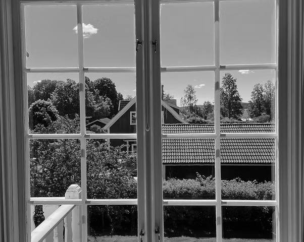

← Tillbaka till tjänster
Fönsterputsning
Vi putsar fönster noggrant och effektivt för både privatpersoner och företag i Hagfors med omnejd. Vi kan även utföra arbeten där skylift behövs.

Om tjänsten
Fönsterputsning som gör skillnad
Rena fönster ger ett ljusare intryck både hemma och på arbetsplatsen. Vi utför fönsterputsning noggrant, effektivt och med rätt metod beroende på fönstrets skick, placering och behov.
Tjänsten passar både privatpersoner, kontor, butiker, fastigheter och företag som vill ha ett professionellt resultat utan ränder, fläckar eller krångel.
Detta utför vi:
- Utvändig fönsterputsning
- Invändig fönsterputsning
- Putsning mellan glas där det är möjligt
- Rengöring av karmar och fönsterbågar vid behov
- Fönsterputs för villor, lägenheter, kontor och butik
- Återkommande putsning för företag och fastigheter
- Arbeten där skylift behövs efter överenskommelse
Se våra före- och efterbilder

Vill du veta mer?
Skicka en offertförfrågan eller ring oss så hjälper vi dig vidare.
Gå till kontaktformuläret